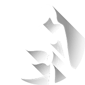

Водолей
Январь 21 - Февраль 19
"Чем больше я знаю, тем больше узнаю, что я ничего не знаю" (Альберт Эйнштейн). Когда мы оказываемся в аналогичном положении, то можем положительно или отрицательно повлиять на положение вещей и на то, что мы должны делать. Если Вы думаете, что видите только верхушку айсберга в отношении огромного количества информации, которую надо обработать, не бойтесь. Процесс обучения вряд ли будет таким трудоемким, как Вы думаете. Дайте шанс делу сдвинуться с мертвой точки.